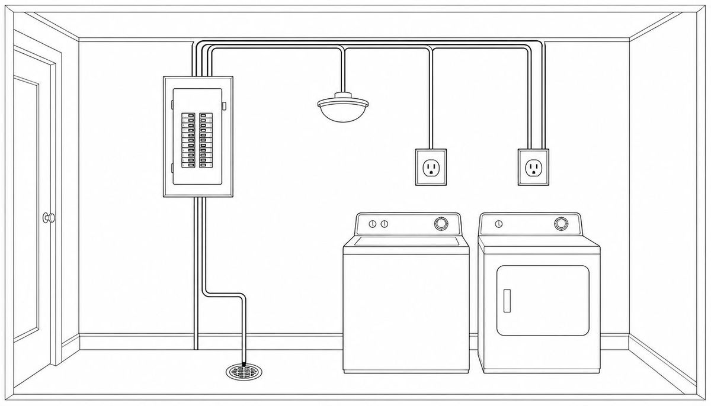

стиральная машина потребляет 2,2 кВт, сушильная — 2,5–3 кВт, поэтому каждой нужна отдельная линия 3×2,5 мм² с автоматом 16 А и УЗО 10–30 мА. Розетки — IP44 на высоте 900–1100 мм, не за машиной. Кабель — ВВГнг-LS в гофре, обязательно заземление. Электрика в постирочной обходится в 25 000–70 000 руб. Главная ошибка — обе машины на одну линию: при одновременном пуске автомат 16 А выбивает через 5–10 минут.
Сколько мощности нужно

| Прибор | Мощность | Ток | Сечение |
|---|---|---|---|
| Стиральная машина | 2,0–2,2 кВт | 9–10 А | 3×2,5 мм² |
| Сушильная машина | 2,5–3,0 кВт | 11–14 А | 3×2,5 мм² |
| Стирально-сушильная | 2,8–3,2 кВт | 13–15 А | 3×2,5 мм² |
| Водонагреватель 50 л | 2,0–2,5 кВт | 9–11 А | 3×2,5 мм² |
| Свет и вытяжка | 0,1–0,3 кВт | 0,5–1,5 А | 3×1,5 мм² |
Суммарно постирочная с двумя машинами тянет 5–6 кВт. На квартиру с электроплитой вводной автомат обычно 40–50 А, и постирочная занимает 25–30 % его мощности — поэтому линии делают отдельными, а не «повесить на розетки коридора».
Линии и автоматы
| Линия | Кабель | Автомат | УЗО |
|---|---|---|---|
| Стиральная машина | 3×2,5 мм² | 16 А, C | 10–30 мА |
| Сушильная машина | 3×2,5 мм² | 16 А, C | 10–30 мА |
| Свет | 3×1,5 мм² | 10 А | общее 30 мА |
| Вытяжной вентилятор | 3×1,5 мм² | 6–10 А | общее 30 мА |
| Резервная розетка | 3×2,5 мм² | 16 А | 30 мА |
Автомат 16 А на кабель 2,5 мм² — стандарт: кабель выдерживает 25 А, автомат защищает его с запасом. Ставить 25 А «чтобы не выбивало» нельзя — при перегреве кабель в стене загорается раньше, чем сработает защита.
Розетки: тип, высота, место
| Параметр | Норма | Комментарий |
|---|---|---|
| Степень защиты | IP44 | влажное помещение |
| Высота | 900–1100 мм | выше шланга и слива |
| Расстояние от машины | 150–300 мм сбоку | не за корпусом |
| Расстояние от воды | от 600 мм | от смесителя и шлангов |
| Тип | с заземлением, с крышкой | евророзетка 16 А |
Розетка за машиной — частая ошибка: чтобы выключить, приходится двигать 60 кг техники. Ставят сбоку или выше корпуса, в зоне доступа. Для сушильной машины с тепловым насосом добавляют розетку для конденсата — если насос не встроен.
Влага, вентиляция и защита
| Мера | Параметр | Цена |
|---|---|---|
| Вытяжной вентилятор | 30–50 м³/ч | 2 500–9 000 руб. |
| Розетки IP44 | 16 А | 400–1 500 руб./шт. |
| УЗО 10 мА | 2-полюсное | 2 500–6 000 руб. |
| Гидроизоляция пола | 1,5–2 мм | 250–500 руб./м² |
| Реле напряжения | щит | 3 000–8 000 руб. |
Постирочная без вытяжки — это конденсат на стенах и розетках. Вентилятор на 30–50 м³/ч убирает влагу от одной машины, для двух нужен 50–80 м³/ч или приточный клапан в двери.
Смета 2026
| Позиция | Стоимость |
|---|---|
| Кабель 3×2,5 (30 м) и 3×1,5 (15 м) | 4 500–8 000 руб. |
| Автоматы 16 А, 2 шт. + УЗО | 4 000–9 000 руб. |
| Розетки IP44, 3 шт. | 1 500–4 500 руб. |
| Штробление и монтаж | 8 000–25 000 руб. |
| Вентилятор с обратным клапаном | 2 500–9 000 руб. |
| Сборка и маркировка в щите | 3 000–8 000 руб. |
Итого 23 500–63 500 руб. под ключ. Если щит рядом и штробить почти не нужно — 15 000–30 000 руб.
Щит и место для него
В постирочной щит ставят, только если помещение сухое и есть 600–800 мм свободной стены на высоте 1200–1600 мм. Во влажном помещении щит должен быть со степенью защиты IP54 и с прозрачной крышкой.
| Вариант | Модулей | Цена |
|---|---|---|
| Мини-щит на 2 линии | 6–8 | 3 500–8 000 руб. |
| Щит на постирочную и ванную | 12–18 | 8 000–18 000 руб. |
| Щит IP54 встраиваемый | 12–18 | 10 000–22 000 руб. |
| Общий квартирный щит | 18–36 | 25 000–60 000 руб. |
Если квартирный щит стоит в прихожей, отдельный щит в постирочной не нужен: линии идут от общего. Отдельный ставят, когда до щита 15–20 м и хочется сократить трассы — но тогда в нём нужен вводной автомат и своё УЗО.
Стирально-сушильная машина
Комбинированная машина «2 в 1» при сушке потребляет 2,8–3,2 кВт — больше, чем при стирке. На неё нужна линия 3×2,5 мм² с автоматом 16 А, а лучше 3×4 мм² с автоматом 20 А при длине трассы больше 20 м.
| Режим | Мощность | Ток | Сечение при 20 м |
|---|---|---|---|
| Стирка 60 °C | 2,0–2,2 кВт | 9–10 А | 3×2,5 мм² |
| Сушка | 2,8–3,2 кВт | 13–15 А | 3×2,5–4 мм² |
| Стирка + нагрев воды | 2,2–2,5 кВт | 10–11 А | 3×2,5 мм² |
При длине трассы больше 20 м потери в кабеле растут: 2,5 мм² ещё работает, но падение напряжения достигает 3–4 %. Для комфортной работы берут 4 мм² — это +1 500–3 000 руб. на линию.
Если постирочная в ванной
Стиральная машина в ванной — самый частый вариант в квартирах без отдельного помещения. Требования жёстче: розетка вне зоны душа (не ближе 600 мм от границы), УЗО 10 мА, розетка IP44 с крышкой, отдельная линия от щита.
| Зона | Расстояние от душа | Что можно |
|---|---|---|
| Зона 0 | внутри поддона | ничего |
| Зона 1 | до 600 мм | только водонагреватель с IPX5 |
| Зона 2 | 600–2400 мм | розетки IP44 с УЗО 10 мА |
| Вне зон | больше 2400 мм | обычные розетки с УЗО |
Розетку за стиральной машиной в ванной не ставят никогда: доступ к ней перекрыт, а влага скапливается именно за корпусом. Оптимально — сбоку на 900–1100 мм, в зоне 2.
Порядок работ
- Определить мощность машин по паспорту и посчитать суммарную нагрузку.
- Развести линии: отдельная на каждую машину, отдельная на свет.
- Разметить розетки сбоку от машин на 900–1100 мм.
- Проштробить, проложить кабель в гофре, установить подрозетники.
- Смонтировать автоматы и УЗО в щите, промаркировать линии.
- Проверить сопротивление изоляции и работу УЗО кнопкой «Тест».
- Установить розетки IP44 и вентилятор, заделать штробы.
Ошибки и их цена
| Ошибка | Последствие | Исправление |
|---|---|---|
| Две машины на одну линию | выбивает автомат | новая линия 8 000–20 000 руб. |
| Розетка за машиной | не выключить без сдвига | перенос розетки |
| Нет УЗО | риск поражения током | доп. монтаж 2 500–6 000 руб. |
| Розетка IP20 | окисление контактов | замена на IP44 |
| Нет вытяжки | конденсат, плесень | вентилятор 2 500–9 000 руб. |
Чек-лист перед монтажом
- Отдельная линия на каждую машину, 3×2,5 мм².
- Автомат 16 А и УЗО 10–30 мА.
- Розетки IP44 сбоку от машин, 900–1100 мм.
- Заземление во всех розетках.
- Вытяжка 30–80 м³/ч.
- Реле напряжения в щите.
Частые вопросы
Можно ли подключить стиральную и сушильную машину к одной розетке?
Нет. Суммарно это 5–6 кВт, автомат 16 А выбьет при одновременной работе. Нужны две отдельные линии.
Какое сечение кабеля нужно для стиральной машины?
3×2,5 мм² медь с автоматом 16 А. Кабель 3×1,5 мм² годится только для машин мощностью до 2 кВт и не рекомендуется.
На какой высоте ставить розетку в постирочной?
900–1100 мм от пола, сбоку от машины на 150–300 мм. За корпусом ставить нельзя — не будет доступа.
Нужно ли УЗО 10 мА?
Да, для влажного помещения лучше 10 мА. Групповое 30 мА тоже допустимо, но 10 мА срабатывает раньше при утечке через влагу.
Сколько стоит электрика в постирочной?
23 500–63 500 руб. под ключ с материалами. При близком щите — 15 000–30 000 руб.
Можно ли поставить розетку в постирочной без заземления?
Нет. Стиральная машина с металлическим корпусом и водой без заземления — прямой риск поражения током.